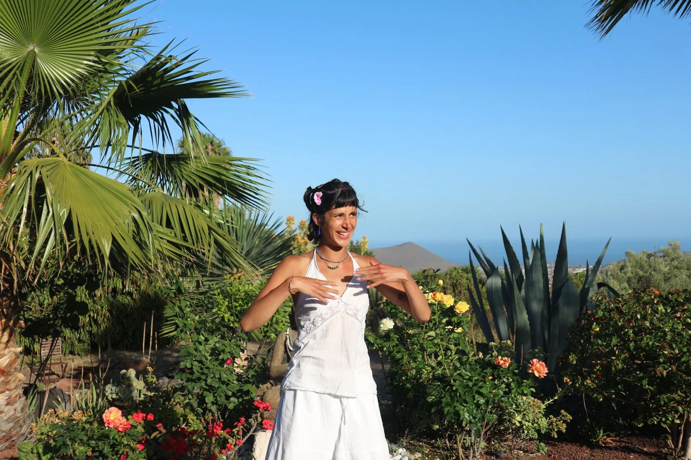

Gentle confidence
Clear, calm guidance and reassuring options for different abilities and fitness levels.
A grounded and welcoming approach to movement, with the freedom to arrive exactly as you are.

I believe the most meaningful moments are often the ones we allow ourselves to slow down and notice.
I’m a qualified yoga teacher offering Vinyasa and Hatha, with a focus on strength, flexibility and relaxation. My aim is to create a space that feels welcoming from the very first minute — whether you practise regularly or have never stepped on a yoga mat before.
On your wedding morning, I want the experience to feel entirely yours: gentle where you need gentleness, energising if that suits you, with plenty of room for laughter and connection.
Clear, calm guidance and reassuring options for different abilities and fitness levels.
Respect for your hair, makeup, ceremony and photographer so everything flows without pressure.
A personal ritual in your own space, rather than a public studio or large group class.
No complicated shapes, no forced spirituality, and no pressure to look a certain way.
Tell us where and when you're getting married. We’ll help you find the right experience, with no pressure to book.
Enquire about your wedding morning